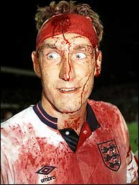

|
|  |
|
Chris Piper, Jets 2nds, doesn't half look like a butcher!!
|
Hachioji Park, Saturday 13th February.
This game by the numbers:
Goals: 7
Goals in last 5 minutes: 3
Red and yellow Cards: 0
Sensible decisions by Rouven: many
Hospital visits with head injuries: 2
(Piper seems to be OK with his, hope the Sun player has recovered as well)
Candidates for goal of the season: 2 (?)
Controversial offside/onside goals: 1
Times Konuma skinned the Jets defence: er...lost count...
===
It certainly was a funny old game. Jets 2nds dominated the first half, with Gildart and Shikama buzzing, only for a sharp counter from Sun to put them 1 up. Chances were made and missed, until Piper's block-tackle fell to Garner just outside the box. He promptly thumped it into the top corner off the underside of the bar, to draw the Jets level at half-time.
The Jets then went ahead when Nate Gildart cleverly timed his run (?) and broke free from half-way. He kept his nerve and slotted past the keeper to make it 2-1. Piper and the Sun defender then banged heads, both emerging with blood pouring out of holes in their crowns. The Sun fella went straight to the nearest hospital in the back of a cab. Piper, emerged, all Terry Butcher circa 1989, with a dirty towel or something holding his scalp together.
Sun were reduced to 10 players, which led to immediate collapse from the Jets. Konuma and the other guy up front were reduced to dribbling past as many players as they could. Unfortunately for the Jets, they were rather good at it, and Sun started looking the most likely to score next. From a corner, Konuma then outjumped 2 Jets defenders to nod past big Sean. 2-2, and only 8 minutes or so left.
The game then swung back in the Jets's favour, as Sun started to tire. A succession of free-kicks and corners were wasted, until a clearance from one of them fell to full-back Justin Lancaster. Justin has only ever scored one goal for the Saitama men, and that was a cross that looped up off his shin a couple of years ago. There was no doubt about this shot, though, as he belted a screaming drive past the hapless Sun keeper from outside the area. 3-2 Jets, with just a few minutes remaining. Gildart added another after good work from Piper, as Nate nipped in to steal from an unaware defender before finishing crisply. With virtually the last kick of the game, the Jets scored again, a nice finish from Glen after good build-up work from Nate and Isaac.
So, an odd game, but another victory from the Jets 2nds, against skilful opponents.
Glen had a great game, as did Isaac, and Setters, Kingsbeer, Bentz and Takahashi were also solid in defence. A similar challenge awaits next week in the shape of Yoshioka and friends of Stoneds.
Report by Gary Garner
|